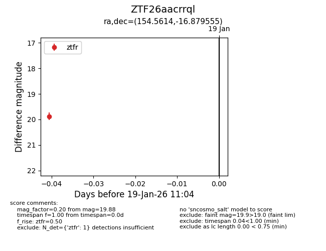
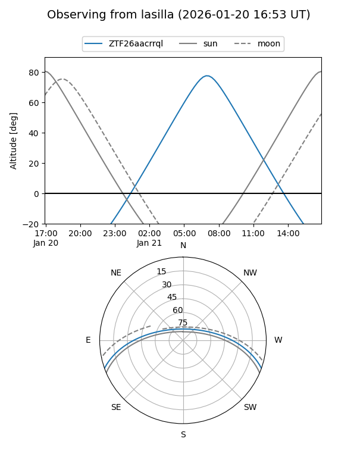
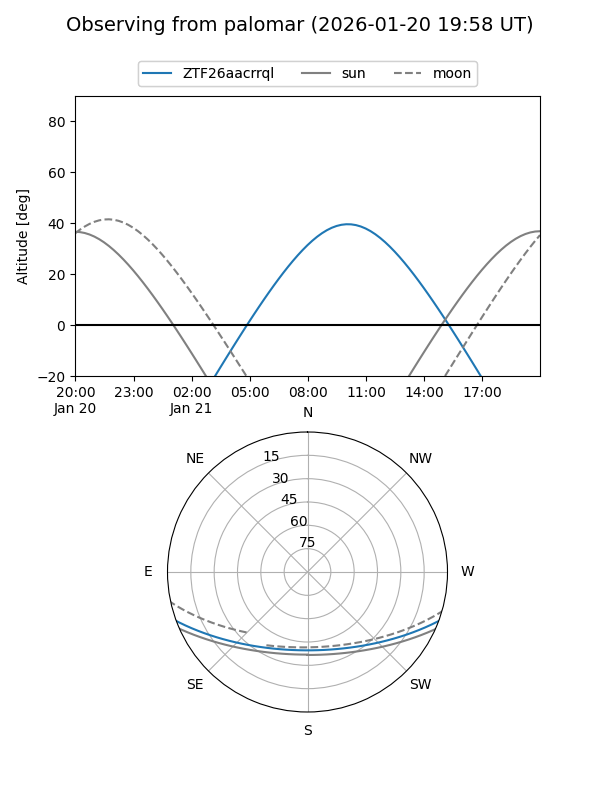

ZTF26aacrrql
Target ZTF26aacrrql at 2026-01-21 11:06
Aliases and brokers:
FINK: link
Lasair: link
ALeRCE: link
alt names
ZTF26aacrrql (ztf,fink_ztf)
Coordinates:
equatorial (ra, dec) = 154.5614,-16.87956
equatorial (HMS+DMS) = 10:18:14.73,-16:52:46.40
galactic (l, b) = (258.3064,+32.40961)
Flags:
Photometry:
last ztfg=19.20, ztfr=19.88
1 ztfg, 1 ztfr detections
Lightcurve

Visibility


Additional plots